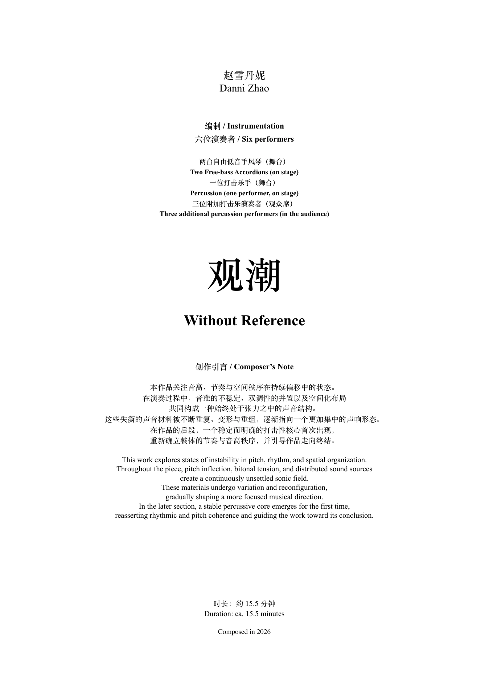
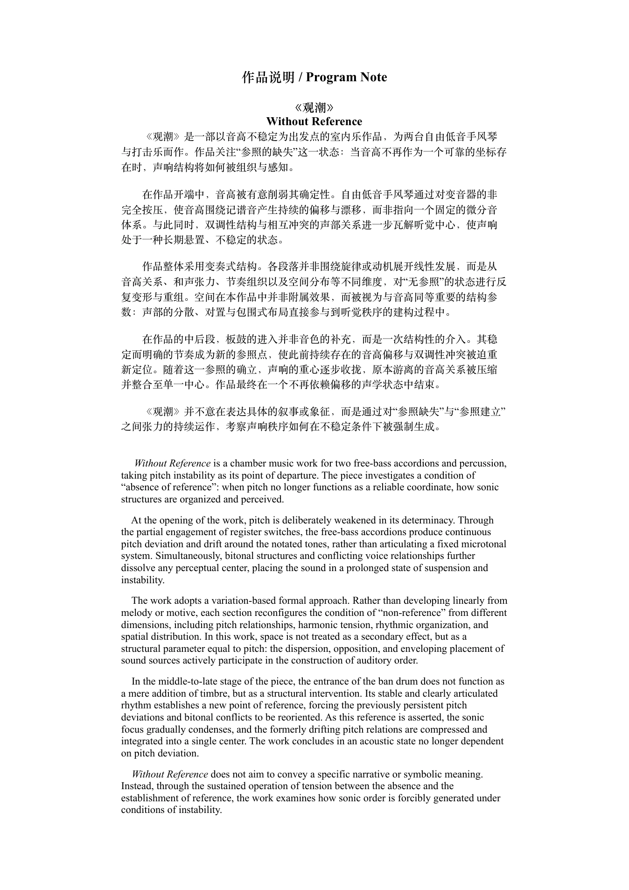
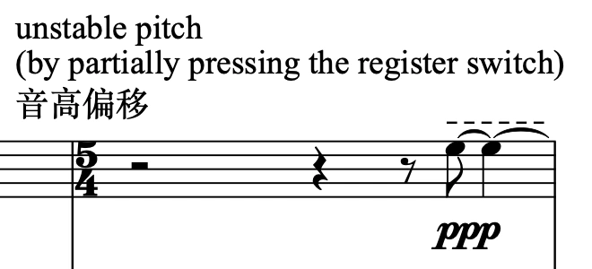
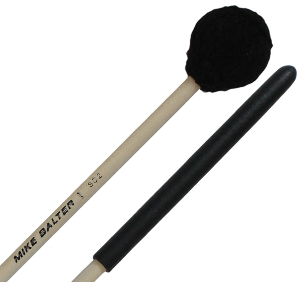

Tidal Bearings 观潮


About the work
Tidal Bearings is a contemporary chamber work for two free-bass accordions and a distributed percussion system. The tide serves as a metaphor for its overall structure, while Hong Kong’s return to China provides a historical reference for the musical form. Rather than narrating the event itself, the work asks a more fundamental question: when a historical process moves towards unity through prolonged coexistence, displacement and tension, rather than through an instantaneous rupture, how can musical structure generate order instead of assuming it in advance?
For this reason, I began by establishing the instrumentation, space and systems of reference, rather than starting with melody, themes or a sonic style. This is not a one-off structural experiment, but a statement of how I, as a composer, think contemporary Chinese music can approach musical structure when engaging with real historical experience.
《观潮》是一部为两台自由低音手风琴与分布式打击乐系统而作的当代室内乐作品。作品以 “ 潮 ” 作为整体结构隐喻，并明确以香港回归祖国这一历史进程作为音乐结构的现实参照。作品关注的并非历史事件的叙述本身，而是一个更为根本的问题：当历史并非通过瞬时断裂完成，而是在长期并置、偏移与拉扯中逐步走向统一时，音乐结构应当如何生成秩序，而不是预设秩序。
正是基于这一问题，《观潮》的创作并未从旋律、主题或音响风格出发，而是从编制、空间与参照系统开始确立整体方法论。这并非一次性的结构实验，而是我作为作曲者，对当代中国音乐在面对现实历史经验时应当如何书写结构的一种判断。
Spatial arrangement
Two free-bass accordions and one percussionist occupy the stage. Two cymbal players sit at the rear left and rear right of the audience, while a ban drum is placed at the centre of the front row. The stage percussionist moves between flowerpot drum, naobo and vibraphone.
基于这一立场，《观潮》采用两台自由低音手风琴，并设置四位分布于不同空间位置的打击乐演奏者，共同构成一个非集中式、非单向传播的声场系统。舞台中央的打击乐演奏者在花盆鼓、铙钹与颤音琴之间穿插演奏，形成一个不断变化却尚未确立中心的声响区域；观众席后方左右对称位置的两位镲片演奏者持续制造宽散、延展、难以定位的音头；位于观众席第一排正中的板鼓则被刻意延后，仅在作品中后段才进入结构核心。

Pitch, time and reference
Pitch: an unstable centre
Within this spatial structure, pitch is also deliberately placed in a state of uncertainty instead of serving as a stable point of reference. Only Free-bass Accordion I undergoes sustained pitch displacement; Free-bass Accordion II remains relatively stable throughout. This asymmetry makes pitch displacement a structural state with a direction, rather than an effect of general instability.
在这一空间结构中，音高同样不再被视为稳定参照，而是被主动置于不确定状态。需要明确的是，作品中只有自由低音手风琴 I 发生持续音高偏移，自由低音手风琴 II 始终保持相对稳定。这种不对称关系，使音高偏移不再是整体失稳的音响效果，而成为一种具有方向性的结构状态。
Time: a forward inclination
At several key points, I let a new variation begin on a weak beat of the preceding bar, before that bar is complete. Entering on a downbeat affirms order; entering on a weak beat is often treated as unstable or even incorrect in traditional ideas of form. Retaining this lack of firm footing in Tidal Bearings is not a rejection of technique but of a predetermined order: order should not be affirmed before the structure has matured.
Within this temporal inclination, a recurring 3–3–2 rhythm operates as a secondary mechanism. Although it comes from the tango tradition, it is not used here as a stylistic quotation. What matters is not its cultural association but its persistent forward inclination and difficulty in coming fully to rest. Together with the weak-beat entries, it keeps time moving in a state of having begun without yet being confirmed.
在若干关键位置上，我有意让新的变奏段落并非从正拍进入，而是在前一小节的弱拍中提前发生。从正拍进入意味着对秩序的确认，而弱拍起段在传统形式观念中往往被视为不稳定甚至错误的进入方式。《观潮》中对这种 “ 不站稳 ” 的保留，并非反技巧，而是反预设：当结构尚未成熟时，秩序不应被提前确认。
在上述时间倾斜的框架下，作品中反复出现的 3–3–2 节奏型作为一种次级机制被引入。该节奏型源自探戈传统，但在《观潮》中并未作为风格引用使用，其意义并不在文化指向，而在其内部始终向前倾斜、却难以完全落稳的时间属性。与弱拍起段共同作用时， 3–3–2 不再标定拍点，而持续推动时间前行，使听觉始终处于 “ 已经开始却尚未确认 ” 的状态。
Ban drum: a point of reference
Before this point, pitch keeps drifting and the surrounding sound field draws listeners into an environment without a clear direction. The ban drum does not cover the existing sounds; it introduces an unwavering point of reference for the entire sound field. Under its influence, the part with sustained pitch displacement begins to leave the structural centre. Once displacement has fulfilled its role, it is gradually contained and resolved.
在此之前，音高持续偏移，空间声场回旋包围，观众被卷入一个缺乏明确指向的听觉环境之中。板鼓的出现并非覆盖既有声响，而是为整个声场引入一个不可动摇的参照点。在这一参照的作用下，长期存在的音高偏移声部开始逐渐退出结构核心，偏移在完成其阶段性功能之后，被有序地收束与消解。
Performance notes
| Air button | Forceful percussive use produces mechanical impact and abrupt airflow without a definite pitch. |
|---|---|
| Pitch inflection | Partial pressure on the register switches creates drift around an approximate notated centre; ord. marks the return to normal engagement. |
| Sustained instability | A dashed line above the staff indicates a continuing pitch-instability state. |
| Cymbal attack | Very soft yarn or felt mallets produce diffuse, unfocused attacks. |


